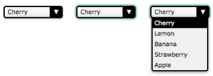

Una opción abanzada a la hora de crear un formulario es la de personalizar un controlador HTML, esto podemos realizarlo con el fin de aplicar estilos abanzados a este o para agregar algun conportamiento personalizado a alguno, sin embargo hay que tener conciensia de la enorme cantidad de trabajo que involucra el crear un nuevo controlador desde cero.
La cración de los controladores nativos conllevo que en su momento multiples personas dedicasen grandes catidades de tiempo definiendo cada aspecto de la funcionalidad, los estilos y la semantica de estos elementos, sin mencionar el trabajo que conllevo el implementarlos y formular su codigo, en el caso de que se desee crear un controlador propio es necesario transitar todo este proseso con ese fin, por ello es que en la insustria los unicos que realmente invierten todo ese tiempo, dinero y energuia a crear o modificar los controladores son los gigantes de la industria como Microsoft o Google
Eso no lo hace imposible sin embargo el crear un nuevo tipo de controlador siertamente es una tarea titanica, tan solo el recrear las funcionalidaddes y seantica de un controlador ya exsistente es una cantidad considerable de trabajo, por ello es que es una actividad que unicamente se realiza cuando es verdaderamente necesario
Aún así si verdaderamente se desea el indagar sobre el como crear uncontrolador desde cero es posible el visitar La guía de Mozilla sobre esto, aquí se encotrara un ejmplo de todo lo necesario desde la estructura HTML del elemto, sus estilos CSS y su codigo JavaScript, todo esto atravez de una practica en la que buscaran recrear un elemento "select"
En dicha guía se busca replicar todas las funcionaliades y cararcteriticas del siguiete elemto:
